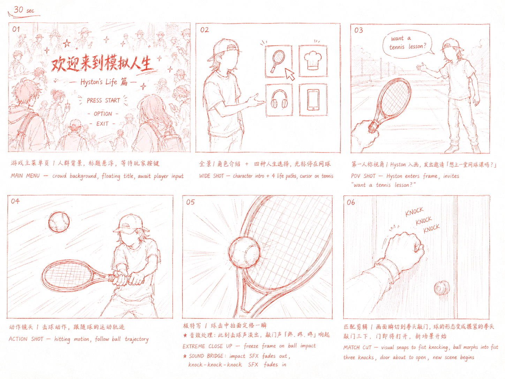

▸ CINEMATOGRAPHY · 镜头语言
-
P01
CAMWIDE — 复古 CRT 开场 + Press Start 字幕WIDE — Vintage CRT opening + Press Start subtitle
-
P02
CAMWIDE — Hyston 摊手 + 四宫格人生选项WIDE — Hyston gestures + 4-grid life pathsUI光标停在「网球」Cursor hovers on "Tennis"
-
P03
POV第一人称落地网球场，Hyston 入画First-person lands on tennis court, Hyston enters frameV/O「想来上一堂网球课吗？」"Want a tennis lesson?"
-
P04
POV第一人称与 Hyston 对打First-person rally with HystonV/O穿插「网球教练」身份自述Interspersed with "Tennis Coach" identity monologue
-
P05
ECUPOV 极特写，球拍接球瞬间定格POV extreme close-up, freeze on racket-ball impact
-
P06
CUTMATCH CUT — 球拍接球 → 拳头敲门，形态匹配硬切MATCH CUT — racket catch → fist knock, form-matching hard cutSFXSOUND BRIDGE：球拍接球声 → 敲门声 × 3SOUND BRIDGE: racket impact → knock × 3